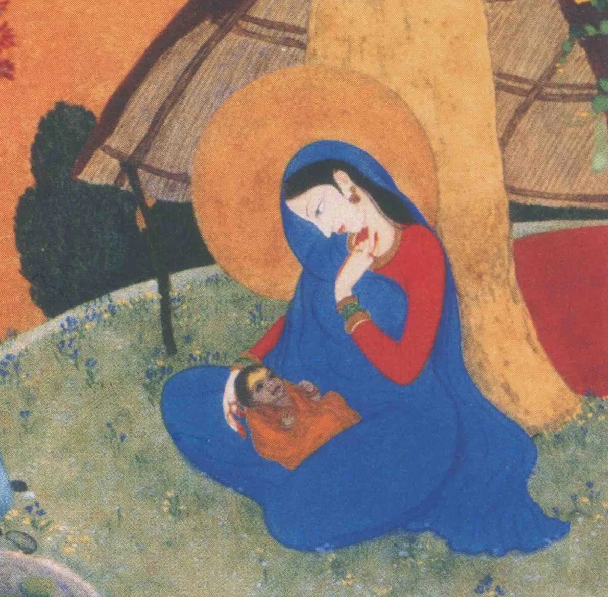

This one is a short yet interesting story.
Every time I meet someone new at an event organised by these two beautiful souls, I am inevitably asked the same question — often spontaneously, or in return. How do you know Chris and Miranda?
This is at least the 15th time without any exaggeration that I am repeating the story. It never gets old and to be honest, I am happy to do it again and again. For, if not because of my association with HaleStone, as I often call them, my life and experience here in Toronto would not be half as homely and pleasant as it is today.
The email
Even before coming to Canada, I was looking for associations for North Indian classical music in Toronto. On the internet, I found the website of Chris Hale, a sitar player and teacher based in the city. Initially on a tight budget, I did not have the means to afford classes, which would be a straightforward way to such association. But, somewhere deep inside I felt I should try my luck.
I used a tool of communication regarded as old school yet the most powerful after handwritten letters, in my opinion. An email. End of my first month in Toronto, I wielded my keyboard to type out the following:
Hello Chris. I am Deepayan. Currently, I am pursuing a Ph.D. in Physics at the University of Toronto. I am new to Toronto, but I have been in search of a place in the city that feels like my homeland, India, and my city, Kolkata. I love the sitar, absolutely love it, which is why I found you. I play the violin myself and listen to Indian Classical Music all day. My mother plays the sitar too. I simply wish to have an association to discuss, practice, and live classical music and you seem to be the only person here. However, I will not be able to afford classes owing to the meager salary Ph.D. students are paid here. I am happy with just sitting in the corner of the room where you teach others. I shall be very grateful to even receive a reply from you as I have heard your playing on YouTube and found them really beautiful. I also noticed the humility with which you dealt with a negative comment from one of your viewers. Thank you so much for going through this message and I hope you and your family are happy and in good health.
Of course, I used my University of Toronto email ID to set up some credibility. The whole affair was easily one of the best things I have done in life. In the next few days, I received a response which was so beyond my expectations that I took some time to believe it. After a short Zoom chat, Chris and Miranda invited me to their home on the eve of Halloween.
To be honest, I would not expect that from any other traditional teacher of music. When I reached their home, spent the whole evening with them, talking about life, music, and everything else, I understood that they were two of the rarest gems one could find on Earth. They were not looking for anything in me, but just a friend — as I was looking for in them. And boy, friendship can be strong! That evening, I pinched myself to do a reality check. I had never done that before. Miranda and Chris made the first proper Bengali meal for me, with daal, rice and fish curry. The food was 'awmrito', especially because my one-month-old culinary skills had given me nothing more than stomach upsets.
The Satsang
Later, as the association developed, I introduced them to my friends as they introduced us to theirs. I met beautiful people through them. It was at one of their first Satsangs after the pandemic that I realised what pivotal roles they play in the society, aside from all the sitar teaching and literal home-making that a major chunk of their time goes into. More so, it was the children of the many friends of Chris and Miranda that I saw playing around and then getting softly mesmerised by the Satsang music and chanting — that sent goosebumps running all over my body.
Most privileged of us follow a trajectory most mundane. Money being the driver of society today, we spend most of our early life studying for jobs, mid life finding one and later life doing them. In the meanwhile we marry, have kids, and trip around. It is mostly after we retire that we see what the true form of life actually is. Yet, society through its most fundamental functioning produces such outliers that create an example that catches all eyes. By not following the norm, they fill necessary gaps in society. A couple quietly rendering service to humanity through their engagement with the world around — without wanting to make it a business like many others — seems to require a load of love, courage and off-route thinking. I thank HaleStone for that.

Credit: Yeshu Satsang Facebook page